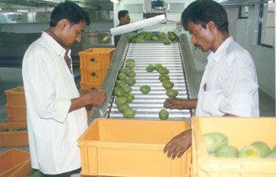

A heritage of produce trading
East Asia Trading is one of the reputed Exporters and Importers of Fresh Fruits and Vegetables from India for more than two decades.
With total exposure of many years we feel that our experience should pave enough confidence in the reputed organizations for desired goal of quality, consistency and reliability of the product.
We are constantly striving towards customer satisfaction through in house R&D (Research and Development). We export for your perusal.
The management of fruit quality is of utmost importance to EAT, as these enables the Group to export its brands with confidence to the most discerning customers worldwide.
In compliance with India's strict export standards, our own inspectors and Perishable Products Export Control Board meticulously check all of our fruits and vegetables.
With our 'in-depth' experience of seasonal and regional climatic variations, we are well qualified to select only top quality export varieties from each area in accordance with international timing requirements.
Working closely with individual farms, our agricultural and market specialists advise on the optimum picking times, quality and packing requirements of our clients' countries. This ensures that the correct product arrives at markets in the best condition, at the correct times.
Offer maximum protection to our fruit.
Transport our fruit in the most freight-efficient manner
Enable impactful merchandising at retail level
Our experts oversee every aspect of the packhouse process from the moment of the product's arrival until it is loaded into the Air craft or container.
Because we place great emphasis on pack shed standards we are involved in every stage of the utilisation of correct washing procedures, quality and class packing, palletisation, correct labelling and internal/external quality control checks.
This guarantees that each market receives each consignment packed and labelled correctly, so that the consumer can enjoy our quality fruit as fresh as possible.

